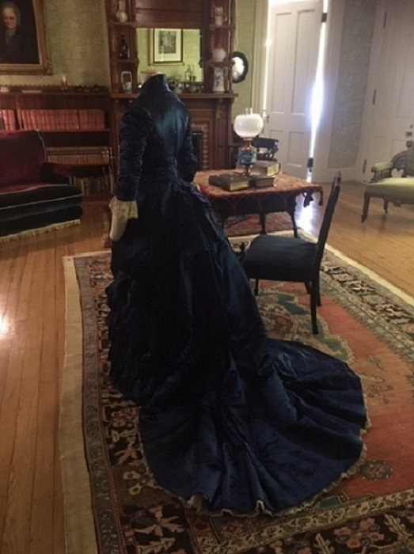
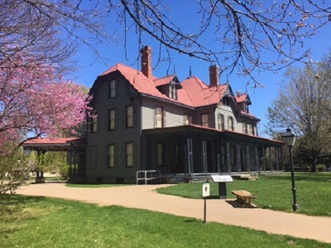
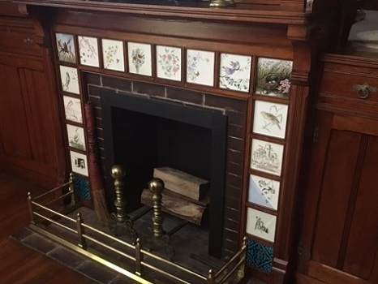
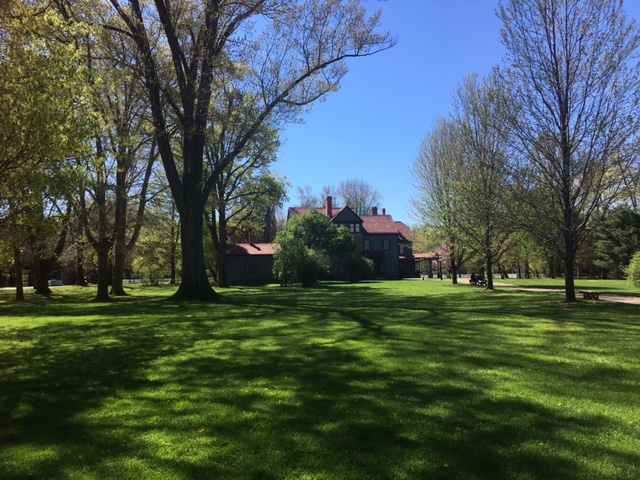
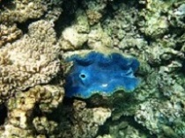
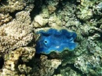

James A Garfield was the 20th president of the US and served less than 200 days before he was killed by an assassin’s bullet. North of Cleveland you will find the James A. Garfield National Historical Site in Mentor, Ohio. The day of my visit was beautiful sprint weather and made my tour of the house and grounds that much more memorable. The front porch of the home was made famous by Garfield during the 1880 campaign where he met with voters. Make sure to watch the video in the welcome center before taking the organized tour. The house is a true museum in that 80% of the artifacts were owned by the Garfield family.
    
